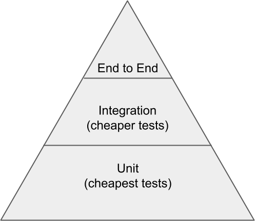

How I Design Test Suites
At Zillow, I've done a lot of work on the design and development of the test infrastructure we use for full-stack tests. It's always fun to watch your tool become popular, but even more interesting is the discussions around test suite design that come with it.
Many discussions later, I have a good idea of what I want in a test suite. Here's what I think about:
Tests are a question of cost #
At the end of the day, tests have a cost. Each and every test has a value / cost ratio. Things that increase the value of a test include:
- consistency: given the same inputs, give the same results, every time.
- speed: the faster the test is, the faster the feedback. The faster the feedback, the faster one can take action, and the more often we can execute the tests to get feedback.
In contrast, the things that increase the cost of a test include:
- maintenance time: maintenance takes time, and development time is expensive. probably the biggest cost to consider.
- cpu / memory to execute the test: although arguably cheap in this world of cloud providers, cpu and memory are real concerns, and tests that use a lot of these resources are expensive.
- the time to execute the test: time is a huge cost, especially as the technology world we live in demands for more changes, more quickly. Depending on how fast you ship, tests that take too long will be prohibitively expensive, and thus not used.
When I look at the value of a test, I look at these factors. In practice, I've found that the most important metric of them all is maintenance time: test that have little to no maintenance survive refactors, rewrites, and pretty much anything that could happen to code besides deprecation.
On the other hand, the more the test requires maintenance, the more likely it'll suffer one of two outcomes:
- the test is thrown out because it takes too much time to maintain, despite the value.
- the test is not given the time it needs, and continues to fall into disarray until it is ignored.
Basically: low maintenance tests last forever, high maintenance tests probably won't.
Designing cheap tests #
So how do we make tests that require little to no maintenance? From what I've observed, there are two types of maintenance:
-
functional maintenance, which modifies the test to reflect changes in the code itself
: - e.g. for a web page, the login form fields are modified
-
operational maintenance, which requires keeping a service dependency in a good state to test.
: - e.g. for an office application with cloud sync, keeping the
cloud syncing service up.
Functional maintenance is unavoidable: as code changes, one must ensure that any tests that validate that code are kept up to date. In addition, for most tests, functional maintenance is relatively cheap in time: except in the cases of extreme redesigns or refactorings, the changes tend to be small in nature.
Operational maintenance costs can vary wildly, and it can become very expensive. Tests that have multiple dependencies can become a game of juggling an environment where all of those are functional. It becomes even harder if there's a small team maintaining this environment: executing the tests consistently requires a production-quality environment, and that's more difficult the more services there are to maintain.
However, unlike functional maintenance, operational maintenance, for the most part, is avoidable. Taking advantage of heavy mocking, it's possible to remove dependencies like databases and APIs. Google Testing Blog has a good article about this.
Summary: tests with fewer operational dependencies are cheaper to maintain.
What kind of test distribution: the testing pyramid #
When testing software, there are multiple levels at which one could author tests:
- at the "unit" level, typically written in the same language and validating a single function or behaviour
- at the integration level, typically written in the same language, and validating the communication between your code and an external application
- at the end-to-end level, not necessarily written in the same language, and validating a complete workflow that a user would be performing.
Although all are important and should be included in a test suite, each test is not created equally. Going back to the idea that tests with the least maintenance will last the longest, we should be trying to have as many of those as possible.
Unit tests are the cheapest. They:
- have no dependencies (or else they would at least be considered an integration test),
- run quickly (no waiting for network, or other delay from communication)
If we could capture all behaviour of our application with just unit tests, that would be perfect. Unfortunately, many things can go wrong when composing multiple pieces of these units together, so some level of integration and end-to-end tests will be needed. But the larger tests should be fewer in number, since they are harder to maintain.
A good model to visualize a good distribution is the "testing pyramid", as explained by Martin Fowler and Google:

The more expensive tests are fewer in number, while the cheaper tests are much more common.
How many tests should be in a suite #
Adequate test coverage varies wildly between applications: medical software than monitors heart rate should probably have a lot more coverage than a non-critical social media website. The only common rule of thumb I've found is: add the absolute minimum number of tests to achieve your desired confidence in quality.
Testing is important, but at the end of the day, it's not a user-facing feature. On the other hand, quality is. Adding additional tests does increase quality, but it comes at the cost of development and maintenance time toward other features that help your application provide value. A properly sized testing suite comes right at the line of too little testing, and hover around that. This gives developers as much time as possible on features, while ensuring that an important feature (quality) is not neglected.
Summary #
- the best tests are the cheapest tests: low maintenance and executes quickly and low CPU/RAM resources
- the cheapest tests have the fewest number of dependencies on other applications, like DBs or APIs
- try to keep test coverage as low level as possible, and cheap tests are worth 10x expensive ones.
- expensive tests validate the whole infrastructune, so they're almost always necessary: refer to the test pyramid for a rough sketch of a good distribution.
- never add more or less coverage than you need: more coverage results in more maintenance that detracts from development time, and less coverage means an application whose quality is not up to the desired standards.
- how much coverage do I need? Depends on how critical the application is, and how critical it continues to work. A payment path needs high quality, so should have high coverage. The alignment of a button on a dialog three pages deep probably needs less quality assurance.
How do you design your test suite?